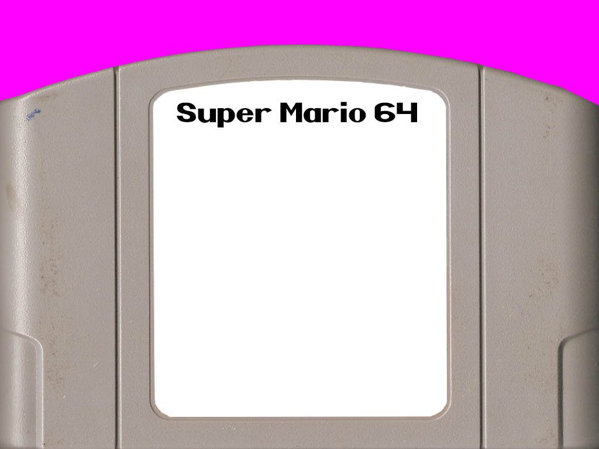

Super Mario 64 is a 1996 platform video game for the Nintendo 64, and the first in the Super Mario series to feature three-dimensional gameplay. As Mario, the player explores Princess Peach's castle and must rescue her from Bowser.